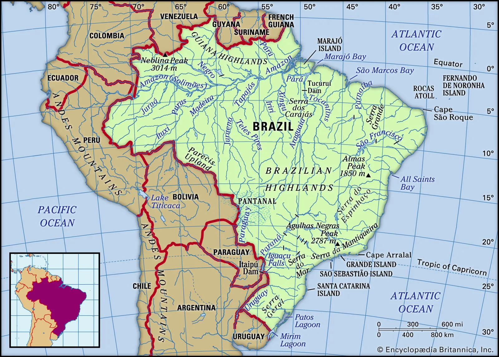

Geographical Layout

General
The Brazilian landscape is immense and complex, with interspersed rivers, wetlands, mountains, and plateaus adjoining other major features and traversing the boundaries of states and
regions.
The Brazilian government has grouped the country’s states into five large geographic and statistical units called the Major Regions (Grandes Regiões): North (Norte), Northeast
(Nordeste), Central-West (Centro-Oeste), Southeast (Sudeste), and South (Sul). The tropical North—comprising the states of
Acre
,
Rondônia
,
Amazonas
,
Pará
,
Tocantins
,
Roraima
, and
Amapá
—covers more than two-fifths of Brazilian territory and includes the largest portion of Amazon rainforest and parts of the Guiana and Brazilian highlands; however, the region accounts
for a limited proportion of the nation’s population and economic output.
Regions
The Brazilian government has grouped the country’s states into five large geographic and statistical units called the Major Regions (Grandes Regiões): North (Norte), Northeast
(Nordeste), Central-West (Centro-Oeste), Southeast (Sudeste), and South (Sul). The tropical North—comprising the states of Acre, Rondônia, Amazonas, Pará, Tocantins, Roraima, and
Amapá—covers more than two-fifths of Brazilian territory and includes the largest portion of Amazon rainforest and parts of the Guiana and Brazilian highlands; however, the region
accounts for a limited proportion of the nation’s population and economic output.
North
The Northeast, which experiences some of the nation’s driest and hottest conditions, has nearly one-fifth of Brazil’s land area and more than one-fourth of the population. It contains
the states of Maranhão, Piauí, Ceará, Rio Grande do Norte, Paraíba, Alagoas, Sergipe, Bahia, and Pernambuco, the latter including the island of Fernando de Noronha, some 225 miles (360
km) off the Atlantic coast. The region’s oldest cities date from the 16th century, when the Portuguese first established sugarcane plantations there. The Northeast accounts for
one-fifth of the nation’s agricultural production, but the industrial and service sectors lag far behind those of the Southeast and South, and the unemployment rate remains high.
South
The Southeast covers only one-tenth of Brazil’s territory but has two-fifths of its population and the greatest concentration of industrial and agricultural production in the nation.
The region includes São Paulo state, which is the nation’s economic and demographic heartland, landlocked Minas Gerais, whose very name (meaning “Extensive Mines”) testifies to great
mineral wealth, and the populous coastal states of Espírito Santo and Rio de Janeiro. The city of Rio de Janeiro, the national capital from 1763 to 1960, remains Brazil’s main cultural
and tourist centre. The South, which stretches below the Tropic of Capricorn, includes the states of Paraná, Santa Catarina, and Rio Grande do Sul. It occupies an area nearly as large
as the isle of Britain but is the smallest of Brazil’s regions. Its diversified economy includes strong manufacturing, agriculture, and service sectors. The South has about one-seventh
of the nation’s population, including many people of European ancestry, particularly from Germany and Italy. The South’s tourist trade partly depends on the spectacular Iguaçu Falls,
at the Argentine border.
Central
The Central-West consists of the states of Goiás, Mato Grosso, and Mato Grosso do Sul, as well as the Federal District, in which Brasília is located. The region covers roughly
one-fourth of Brazil, including forested valleys, semiarid highlands, and vast wetlands. A small proportion of the nation’s population lives there, but an increasing number of settlers
have been moving into the region and extending its agricultural frontiers.
History
Early History
Before the arrival of the Europeans, the lands that now constitute Brazil were occupied, fought over and settled by diverse tribes. Thus, the
History of Brazil
begins with the
indigenous people in Brazil
. The Portuguese arrived to the land that would become
Brazil
on April 22, 1500, commanded by
Pedro Álvares Cabral
a Portuguese explorer on his way to India under the sponsorship of the
Kingdom of Portugal
and the support of the
Catholic Church
. From the 16th to the early 19th century, Brazil was created and expanded as a colony, kingdom and an integral part of the
Portuguese Empire
. Brazil was briefly named "Land of the Holy Cross" by Portuguese explorers and crusaders before being named "Land of Brazil" by the Brazilian-Portuguese settlers and merchants dealing
with
Brazilwood
. The country expanded south along the coast and west along the
Amazon
and other inland rivers from the original 15 donatary captaincy colonies established on the northeast Atlantic coast east of the
Tordesillas Line
of 1494 that divided the Portuguese domain to the east from the Spanish domain to the west. The country's borders were only finalized in the early 20th century - with most of the
expansion occurring before the independence, resulting in the largest contiguous territory in the Americas.
Europeans explored the Brazilian coastline only after mapping parts of the Caribbean Sea and the northeastern coast of South America; moreover, intensive exploration of Brazil resulted
indirectly from Portugal’s efforts to expand its colonies in Africa and Asia. In 1498 the Portuguese navigator Vasco da Gama discovered an all-water route to the Indies and the Spice
Islands via Africa’s Cape of Good Hope. The Portuguese king, hoping to capitalize on this discovery, dispatched an imposing armada to India under Pedro Álvares Cabral, whose sailing
directions had been drawn up by da Gama himself. To avoid the calms off the Gulf of Guinea, Cabral bore so far to the west that on April 22, 1500, he sighted the mainland of South
America. The Treaty of Tordesillas (1494) between Spain and Portugal had established a line at about longitude 46° 30′ W that divided Spanish (west) and Portuguese (east) claims in the
New World. The region sighted by Cabral lay well within the Portuguese zone, and the crown promptly claimed it. Portugal’s new possession was initially called Vera Cruz (“True Cross”),
but it was soon renamed Brazil because of the copious amounts of brazilwood (pau-brasil) found there that yielded a valuable red dye.
Colonization
Following the 1494
Treaty of Tordesillas
, the land now called Brazil was claimed for the Portuguese Empire on 22 April 1500, with the arrival of the Portuguese fleet commanded by Pedro Álvares Cabral.The Portuguese
encountered indigenous peoples divided into several ethnic societies, most of whom spoke languages of the Tupi–Guarani family and fought among themselves. Though the first settlement
was founded in 1532, colonization effectively began in 1534, when King John III of Portugal divided the territory into the fifteen private and autonomous captaincies.However, the
decentralized and unorganized tendencies of the captaincies proved problematic, and in 1549 the Portuguese king restructured them into the Governorate General of Brazil in the city of
Salvador, which became the capital of a single and centralized Portuguese colony in South America. In the first two centuries of colonization, Indigenous and European groups lived in
constant war, establishing opportunistic alliances in order to gain advantages against each other. By the mid-16th century, cane sugar had become Brazil's most important export, while
slaves purchased in Sub-Saharan Africa in the slave market of Western Africa(not only those from Portuguese allies of their colonies in Angola and Mozambique), had become its largest
import, to cope with sugarcane plantations, due to increasing international demand for Brazilian sugar. Brazil received more than 2.8 million slaves from Africa between the years of
1500 to 1800. By the end of the 17th century, sugarcane exports began to decline and the discovery of gold by bandeirantes in the 1690s would become the new backbone of the colony's
economy, fostering a gold rush which attracted thousands of new settlers to Brazil from Portugal and all Portuguese colonies around the world. This increased level of immigration in
turn caused some conflicts between newcomers and old settlers. Portuguese expeditions known as bandeiras gradually expanded Brazil's original colonial frontiers in South America to its
approximately current borders. In this era other European powers tried to colonize parts of Brazil, in incursions that the Portuguese had to fight, notably the French in Rio during the
1560s, in Maranhão during the 1610s, and the Dutch in Bahia and Pernambuco, during the Dutch–Portuguese War, after the end of Iberian Union. The Portuguese colonial administration in
Brazil had two objectives that would ensure colonial order and the monopoly of Portugal's wealthiest and largest colony: to keep under control and eradicate all forms of slave
rebellion and resistance, such as the Quilombo of Palmares, and to repress all movements for autonomy or independence, such as the Minas Gerais Conspiracy.
Early Republic
The early republican government was a military dictatorship, with the army dominating affairs both in Rio de Janeiro and in the states. Freedom of the press disappeared and elections
were controlled by those in power. Not until 1894, following an
economic crisis
and
a military one
, did civilians take power, remaining there until October 1930. If in relation to its foreign policy, the country in this first republican period maintained a relative balance
characterized by a success in resolving border disputes with neighboring countries, only broken by the
Acre War
(1899–1902) and
its involvement
in
World War I
(1914–1918), followed by a failed attempt to exert a prominent role in the
League of Nations
; Internally, from the crisis of
Encilhamento
and the
Navy Revolts
, a prolonged cycle of financial, political and social instability began until the 1920s, keeping the country besieged by various rebellions, both civilian Little by little,
a cycle of general instability
sparked by these crises undermined the regime to such an extent that in the wake of the murder of his running mate, the defeated opposition presidential candidate
Getúlio Vargas
, supported by most of the military, successfully led the
Revolution of 1930
. Vargas and the military were supposed to assume power temporarily, but instead closed down Congress, extinguished the Constitution, ruled with emergency powers and replaced the
states' governors with his own supporters. In the 1930s, three failed attempts to remove Vargas and his supporters from power occurred. The first was the
Constitutionalist Revolution
in 1932, led by the São Paulo's
oligarchy
. The second was a
Communist uprising
in November 1935, and the last one a
putsch
attempt by
local fascists
in May 1938. The 1935 uprising created a security crisis in which Congress transferred more power to the executive branch. The
1937
coup d'état
resulted in the cancellation of the 1938 election and formalized Vargas as dictator, beginning the
Estado Novo
era. During this period, government brutality and censorship of the press increased. Throughout
World War II
, Brazil remained neutral until August 1942, when the country suffered
retaliation
by
Nazi Germany
and
Fascist Italy
in a strategic dispute over the South Atlantic, and, therefore,
entered the war
on the
allied side
. In addition to
its participation in the battle of the Atlantic
, Brazil also sent an
expeditionary force
to fight in the
Italian campaign
. With the Allied victory in 1945 and the end of the fascist regimes in Europe, Vargas's position became unsustainable and he was swiftly overthrown in another military coup, with
democracy "reinstated" by the same army that had ended it 15 years earlier. Vargas committed suicide in August 1954 amid a political crisis, after having returned to power by election
in 1950.